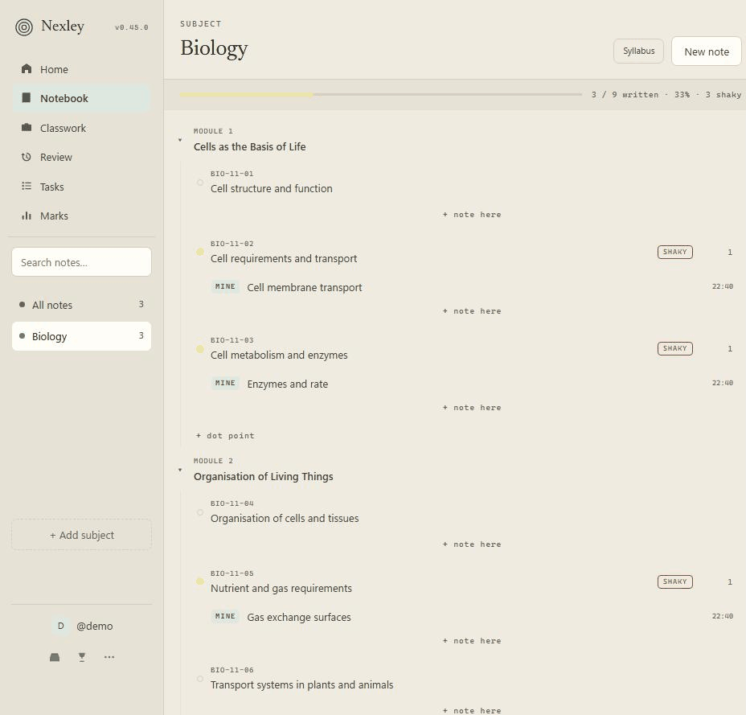

Nexley files every note against the actual dot point it answers. A year of work stays findable, and the parts you have never written up stop being invisible.

Biology, part way through Module 1. The filled dots are written up; the hollow ones are not. That is the whole idea.
Topics at the left margin, dot points indented underneath. Nexley reads the structure and picks up outcome codes automatically, so every note you write from then on has somewhere to belong.
Because the notes are attached to the syllabus rather than to a folder, Nexley can show you how much of a subject you have actually written up. Revision aimed at what you are missing beats re-reading what you already know.
Classwork mode is for what actually happens in a lesson — a diagram off the board, a worked example, something the teacher said would be in the exam. Write it fast and unsorted. Nexley suggests the dot point it belongs to when you have a minute, and filing it keeps the original date.
The matching runs on your own device against the syllabus you pasted in. No model, no account required for it, nothing sent anywhere to work out where a note goes.
Paste the notification your school gave you. Nexley pulls out the due date and lines the task up against the specific dot points it is actually testing — including the ones you have written nothing on yet. The night before stops being a guess about what is on it.
Cards are made from your own notes and scheduled by spaced repetition, so something you nearly forgot comes back sooner and something solid gets out of your way. It is built on your coverage, which means it revises your subject rather than somebody else's idea of it.
You can also set how confident you are on each dot point by hand. Nexley never predicts a band or a mark — it shows you what you have done and what you have not, and that is a different, more useful thing.
Record a paper with the conditions you actually sat it under, and Nexley keeps them apart. It will not average an open-book assignment into an exam result to produce a friendlier number — that number describes nothing you ever sat, and it hides the only gap worth knowing about.
Twelve marks lost to not knowing the content and six lost to running out of time are the same eighteen marks and two completely different problems. One is fixed by revision, the other by a timed practice paper. Say which, per question, and the dot points costing you the most push their review cards back to the front of the queue.
And the planner does the same with your term: what is due each week, whether it fits in the hours you actually have, and which weeks were over-committed the day they were set.
Everything saves to your device first and syncs to your account when there is a connection. School Wi-Fi dropping out mid-lesson is not your problem. Add it to your home screen and it opens like an app — there is nothing to install.
Autosaves as you type. Snapshots taken daily and before every update, import and restore. Deleting a note flags it rather than destroying it.
One thing, and it is the only thing — everything else that was on this list has shipped. If there is something you want, the Feedback button in the app goes straight to the person building it.
One thing that is deliberately not on either list: a predicted band. An open-notes mark and an exam mark are not the same mark and will never be quietly averaged into a number that tells you what you are going to get.
Nexley works and is being used daily, but it is early — a small number of people are on it and features are still landing every week. Your notes are yours: they live on your own device, sync to your own account, and nobody else can read them.
If you are one of those people: there is a Feedback button in the app. What you send goes straight to the person building it, and you will see in that same list what happened to it — read, planned, being built, shipped, or not planned and why. It is the shortest path from something annoying you to something changing.
Nexley is a study notebook that files every note against the syllabus dot point it answers, so a year of work stays findable and the parts you have never written up stop being invisible. It also records real marks with the conditions you sat them under, shows where marks were lost question by question, and lays out the term so you can see which weeks were over-committed the day they were set.
Yes. Nexley is free to use right now, there are no ads, and nothing about you is sold or shared. It is built by one person and is early — if that ever has to change it will be said plainly here first, not discovered at a paywall.
Only you. Notes are stored on your own device first and synced to your own account, protected by database rules that make your rows unreachable by any other account. Nothing you write is public, there is no feed, and there is no way to browse another student's notebook. The only exceptions are things you do on purpose: sending one note to one person you name, or entering a comp, where the others see your username and your score and nothing else.
Yes, fully. Everything saves to your device first, so a lesson with no school Wi-Fi is not a lost lesson, and it syncs whenever a connection comes back. Add it to your home screen and it opens like an app with nothing to install.
No, and that is deliberate rather than unfinished. An open-notes mark and an exam mark are not the same mark, and Nexley will never quietly average them into a number that claims to know what you are going to get. Every number it shows you reflects something that actually happened.
Only when you ask it to, on one answer at a time. You paste in the marking criteria you were given, and it gives feedback against those exact words — with every mark shown against the criterion it hangs on, so you can see the reasoning and disagree with it. It is clearly labelled as written by a model, it can be wrong, and an AI's opinion can never be recorded as one of your real marks. Your notes are never used to train any AI model, and the provider used does not train on what is sent to it.
It was built by a NSW Year 11 student against NSW syllabus structure, so outcome codes and dot points are what it expects. But nothing is hard-coded to one curriculum — you paste in whatever syllabus you were given, topics at the left margin and dot points indented, and it files your notes against that.
Those are excellent blank pages, and a blank page cannot tell you what you have not written. Nexley knows the shape of your course, so it can show coverage, surface the dot points you have never touched, pull weak topics into review, and tie a lost mark back to the part of the syllabus it came from. The longer answer is here.
Yes, at any time, from inside the app — a full export of everything you have written. You can also delete your account and everything in it yourself from Settings, immediately, without emailing anyone.
One Year 11 student in Sydney, building it for his own study and shipping most days. That is the whole team. It is why the feedback button in the app goes straight to the person writing the code, and why you can see what happened to what you sent.